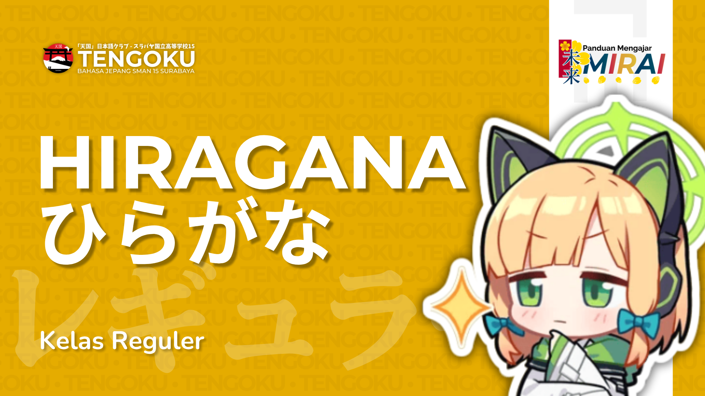
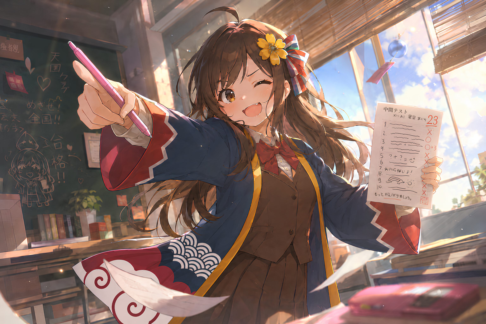
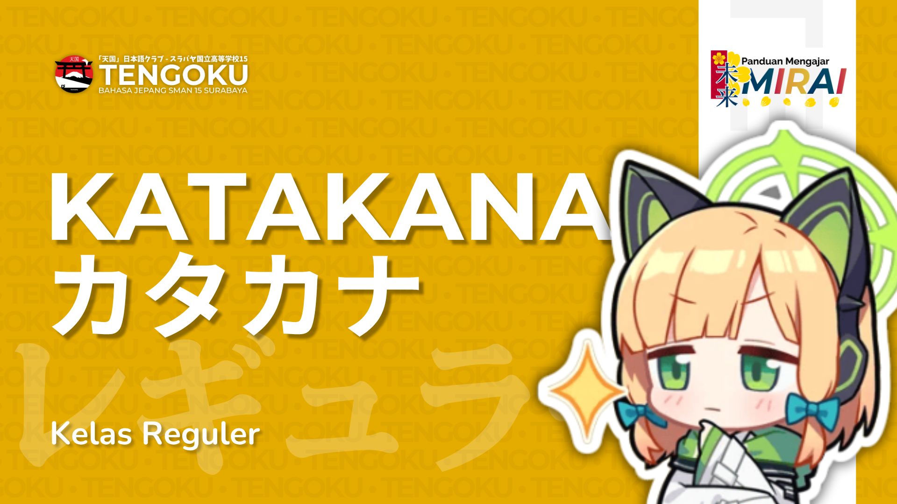
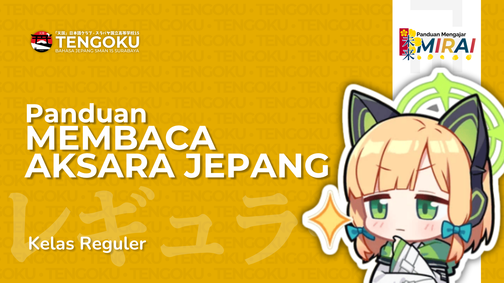

Tabel Hiragana

「天国クラブ」ウェブサイト
Kelas Reguler - Website Materi, kurikulum, dan komunitas dari Bahasa & Budaya Jepang SMAN 15 Surabaya
KELAS REGULER
KUMPULAN MATERI
Materi untuk pemahaman dasar huruf Hiragana dan Katakana.



KUMPULAN MATERI
Kumpulan tabel yang berisi tentang kosakata dan kalimat ekspresi dasar sehari hari.
KUMPULAN MATERI
Kumpulan latihan untuk persiapan Tes Kelas Advance.
FASILITAS ONLINE
Kekurangan, kelebihan, saran, atau pendapat apapun tentang Tengoku, sampaikan lewat formulir singkat kami. Responmu langsung masuk ke tim pengurus.
Isi Formulir Masukan ↗